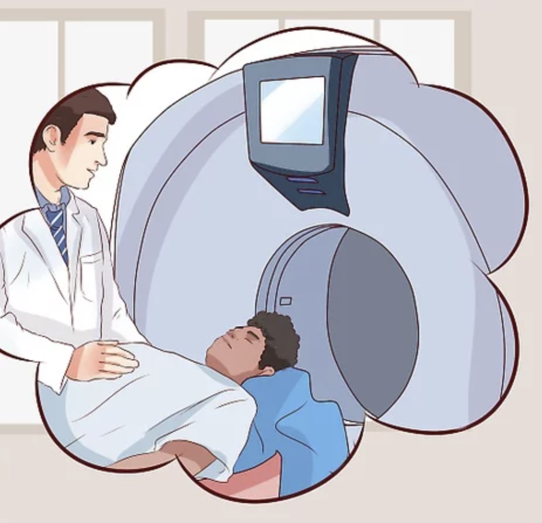

Magnetic Resonance Imaging (MRI) contrast injection involves the use of a contrast agent to enhance the visibility of certain tissues and blood vessels during an MRI scan.
Welcome to MRI-Buddy
The best place to learn everything about what your MRI scan entails.
MRI Questions Prior to Scan
Scheduled for an MRI scan?
Answer the questions with YES/NO to assess your suitability.
MRI Overview

What is MRI
MRI stands for Magnetic Resonance Imaging. It is a medical imaging technique that uses a strong magnetic field and radio waves to generate detailed images of the inside of the body.

How MRI Works
The Magnetic Resonance Imaging (MRI) machine contains a powerful magnet that generates a strong magnetic field around the patient's body to produce detailed images of internal structures of the body.

Preparing For Your Scan
If you have an MRI appointment, there are a few things you can do to prepare for the procedure. MRI scans typically take between 30 and 60 minutes, depending on the area of the body being scanned.
MRI Safety, Contrast & Claustrophobia
MRI Contrast Injection

Patient Safety
MRI is generally considered a safe and non-invasive imaging technique. However, there are some safety concerns associated with the use of MRI, particularly for patients with implants or devices in their bodies.

Claustrophobia & Anxiety
MRI can be a stressful experience for some people, particularly those who suffer from claustrophobia or anxiety. Claustrophobia is the fear of enclosed or tight spaces, and some patients may feel anxious or uncomfortable in the narrow, enclosed space of an MRI scanner.